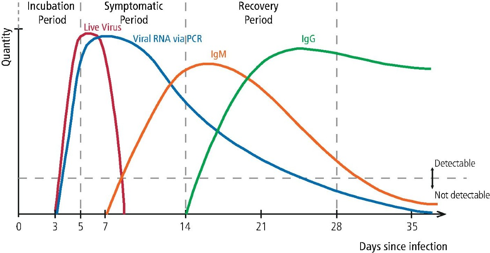
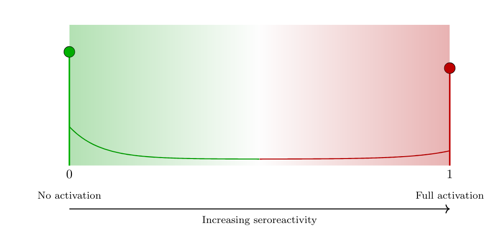
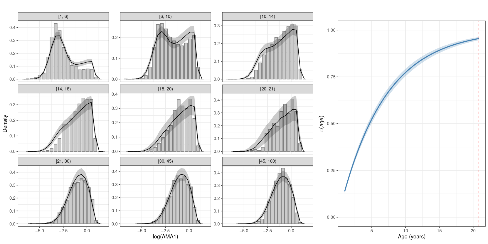
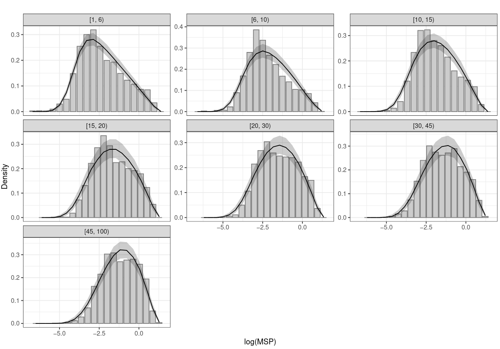
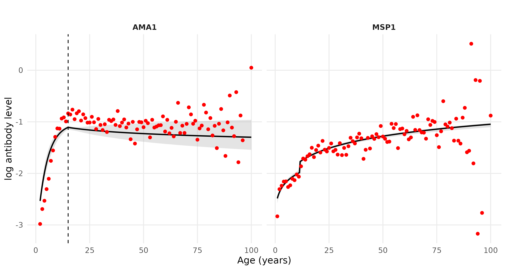
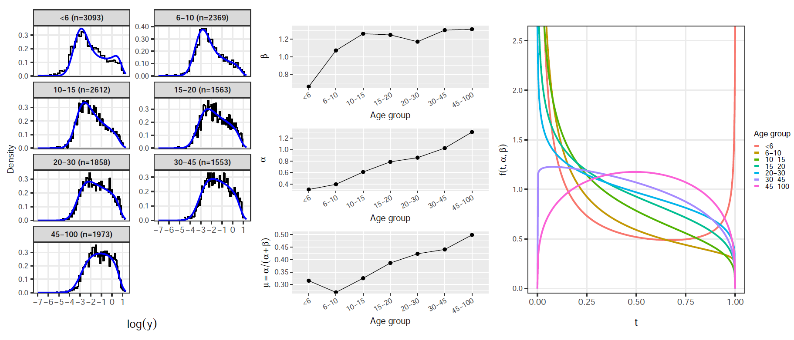

A flexible class of latent variable models for the analysis of antibody response data
University of Birmingham
Lund University
Presentation Overview
- A brief overview of the serology
- Current approaches for the analysis of antibody data
- The proposed modelling approach
- Application to malaria sero-epidemiology
- Summary
Key definitions
Antigen
A molecule (often a protein or polysaccharide) from a pathogen that is recognized by the immune system and can trigger an immune response.Antibody
A protein produced by B cells that specifically binds to an antigen, reflecting current or past exposure to the pathogen.

Immune response to infectious diseases
Denning DW, Kilcoyne A, Ucer C (2020). Non-infectious status indicated by detectable IgG antibody to SARS-CoV-2.
British Dental Journal, 229:521–524. Link to article
When are IgG responses informative?
Infections with many asymptomatic cases
malaria, dengue, chikungunya, ZikaAcute infections with short diagnostic windows
SARS-CoV-2, influenza, yellow feverDiseases with repeated or cumulative exposure
malaria, schistosomiasis, soil-transmitted helminths, onchocerciasisChronic infection or elimination settings
trachoma, lymphatic filariasis, onchocerciasisNot informative when cell-mediated immunity is dominant
tuberculosis, leishmaniasis
Seropositivity and seronegativity
Seronegativity
Absence of detectable antibody response to a given antigen.Seropositivity
Antibody concentration exceeding a predefined assay-specific threshold, interpreted as evidence of prior exposure or immunity.
Common approaches to serostatus classification
- Manufacturer-defined assay cut-offs
- Thresholds based on negative controls
(e.g. mean \(+\) 2 or 3 SDs)
- ROC-based cut-offs using known positive/negative samples
- Immunological correlates of protection (when available)
- Data-driven thresholds via finite mixture models
Antibody data and mixtures
- Quantitative antibody concentration \(Y_i\) (e.g. OD values)
- Classical approach: two-component Gaussian mixture
- Seronegative vs seropositive components
\[ f(y) = \pi_0 \mathcal{N}(y ; \mu_0, \sigma_0^2) + \pi_1 \mathcal{N}(y ; \mu_1, \sigma_1^2), \quad \pi_0 + \pi_1 = 1 \]

A latent variable of sero-reactivity

- Sero-reactivity
The presence or degree of antibody reactivity, irrespective of any diagnostic threshold.
- Latent variable \(T \in [0,1]\) represents the underlying serological activation state:
- \(T=0\): minimal or absent serological activity
- \(T=1\): strong or saturated antibody response
- \(T=0\): minimal or absent serological activity
- Antibody level given latent seroreactivity: \[
Y \mid T=t \sim
\mathcal{N}\!\big( (1-t)\mu_0 + t\mu_1,\;
(1-t)\sigma_0^2 + t\sigma_1^2 \big)
\]
- \(\mu_0\): baseline (no activation)
- \(\mu_1\): saturation level
- \(\sigma_0^2, \sigma_1^2\): heterogeneity at the two extremes
- \(\mu_0\): baseline (no activation)
Link with antibody acquisition models
Classical antibody acquisition model
(Yman et al., 2016) \[ \mathbb{E}[Y;a] = f(a) = \mu_0 + (\mu_1 - \mu_0)\{1 - \exp(-r a)\}, \] with age \(a\) and acquisition rate \(r > 0\).Interpretation in the latent sero-reactivity framework \[ \mathbb{E}[T;a] = \frac{f(a)-\mu_0}{\mu_1-\mu_0} = 1 - \exp(-r a), \]
Resulting expectation of the antibody level \[ \mathbb{E}[Y;a] = \mu_0 + (\mu_1-\mu_0)\,\mathbb{E}[T;a]. \]
How do we model the latent variable \(T\) ?
- Single-density approach
The latent sero-reactivity \(T \in [0,1]\) is modelled using a single parametric distribution: \[ T \sim \text{Beta}(\alpha,\beta), \] where \((\alpha,\beta)\) control the mean level of sero-reactivity and its heterogeneity. - Mixture-distribution approach
The latent variable \(T\) is modelled as a three-component mixture capturing graded serological states: \[ T \sim \pi_0\,\text{Beta}(\alpha_0,\beta_0) + \pi_1\,\text{Beta}(\alpha_1,\beta_1) + \pi_2\,\text{Beta}(\alpha_2,\beta_2), \] with \(\pi_k \ge 0\), \(\sum_{k=0}^2 \pi_k = 1\), representing low, intermediate, and high sero-reactivity.
Single Beta model for \(T\)

How do we model age dependency in \(T\)?
- How should latent sero-reactivity \(T\) change with age, reflecting cumulative exposure and immune maturation?
- Age-dependent structure
Let the distribution of \(T\) depend on age \(a\) through parameters or mixing proportions, allowing gradual acquisition. - Application to malaria
Different antigens exhibit distinct age profiles of acquisition and boosting.- AMA1
Rapid acquisition in early childhood, with sero-reactivity increasing quickly at young ages. - MSP1
Slower and more gradual age-related increases, reflecting different exposure or immune dynamics.
- AMA1
Age-dependent latent model for AMA1
- For age \(a<15\) years, \(T\) follows a Dirac-Beta mixture: \[ T \sim (1-\pi(a))\,\delta_0 + \pi(a)\,\mathrm{Beta}(\alpha_2,1), \quad \pi(a)=1-\exp(-\lambda a). \]
- For age \(a\ge 15\) years, \(T\) follows a single Beta with logit-linear mean: \[ T \sim \mathrm{Beta}\big(\mu(a)\phi,\,[1-\mu(a)]\phi\big), \quad \log\left\{\frac{\mu(a)}{1-\mu(a)}\right\}=\eta_0+\eta_1\log(a). \]
- Continuity constraint on the mean of \(T\) at \(a=15\): \[ \eta_0=\mathrm{logit}(\mu_{15^-})-\eta_1\log(15), \] with \[ \mu_{15^-}=(1-\exp(-15\lambda))\frac{\alpha_2}{\alpha_2+1}. \]
AMA1: parameter estimates
| Parameter | Estimate | SD | 2.5% | 50% | 97.5% |
|---|---|---|---|---|---|
| Distribution of Y | T | |||||
| μ₀ | -3.427 | 0.077 | -3.626 | -3.470 | -3.311 |
| μ₁ | 0.790 | 0.016 | 0.774 | 0.808 | 0.838 |
| σ₀ | 0.606 | 0.041 | 0.537 | 0.609 | 0.695 |
| σ₁ | 0.114 | 0.022 | 0.077 | 0.122 | 0.164 |
| Distribution of T (age < 15) | |||||
| α₂ | 1.337 | 0.074 | 1.248 | 1.341 | 1.563 |
| λ | 0.224 | 0.032 | 0.173 | 0.227 | 0.299 |
| Distribution of T (age ≥ 15) | |||||
| ϕ | 3.423 | 0.259 | 3.078 | 3.520 | 4.117 |
| η₁ | -0.096 | 0.124 | -0.399 | -0.097 | 0.110 |
The estimate of \(\lambda\) suggests that on average it takes about 4.5 years for individuals to reach higher levels of sero-reactivity.
AMA1 analysis: model-based histograms
Age-dependent latent model for MSP1
- Latent sero-reactivity \(T\) follows a single age-dependent Beta distribution: \[ T \sim \mathrm{Beta}(\alpha(a),\beta(a)). \]
- Age-dependent shape parameters: \[ \alpha(a)=\alpha_0\,a^{\gamma}, \quad \beta(a)=\beta_0\,a^{\delta(a)}. \]
- Piecewise age effect in \(\beta(a)\) with change-point \(\tau_{cp}\): \[ \delta(a)= \begin{cases} \delta_1, & a \le \tau_{cp},\\ \delta_1+\delta_2, & a > \tau_{cp}. \end{cases} \]
- Induced mean of \(T\) for \(a \ge \tau_{cp}\): \[ \mathbb{E}[T;a]=\left\{1+\frac{\beta_0}{\alpha_0}a^{\delta_1+\delta_2-\gamma}\right\}^{-1}. \]
MSP1: parameter estimates
| Parameter | Mean | SD | 2.5% | 50% | 97.5% |
|---|---|---|---|---|---|
| Distribution of Y | T | |||||
| μ0 | -4.481 | 0.042 | -4.567 | -4.479 | -4.404 |
| μ1 | 1.255 | 0.026 | 1.205 | 1.255 | 1.307 |
| log σ0 | -0.677 | 0.043 | -0.764 | -0.676 | -0.599 |
| log σ1 | -5.716 | 0.536 | -6.892 | -5.666 | -4.874 |
| Distribution of T | |||||
| α0 | 0.093 | 0.036 | 0.025 | 0.093 | 0.166 |
| γ1 | 0.277 | 0.011 | 0.256 | 0.277 | 0.297 |
| β0 | 0.755 | 0.037 | 0.684 | 0.754 | 0.827 |
| δ1 | 0.110 | 0.018 | 0.075 | 0.110 | 0.145 |
| τcp | 11.623 | 0.406 | 11.004 | 11.667 | 12.197 |
| δ2 | -0.061 | 0.010 | -0.080 | -0.061 | -0.042 |
MSP1 analysis: results
Predicted antibody levels in AMA1 and MSP1
Summary and conclusions
- We proposed a latent-variable framework that generalizes finite mixture models.
- It allows flexible age-dependent modelling.
- Modelling of the latent variable (seroreactivity) can be done using data-driven or mechanistic approaches.
- We are working to extend the proposed model to
- analyse geostatistical and longitudinal data-sets;
- jointly model multiple antibodies.
THANK YOU!

🔗 giorgistat.github.io
📧 e.giorgi@bham.ac.uk
📍 BESTEAM, Department of Applied Health Sciences, University of Birmingham
Inference
Two complementary inference approaches are used:
- full maximum likelihood, and
- a fast histogram-based approximation for exploratory fitting and initialisation.
- full maximum likelihood, and
Conditional on the latent immune state \(T\), antibody concentrations are Gaussian with mean and variance interpolating between low and high sero-reactivity extremes.
The marginal density of \(Y\) is obtained by integrating out \(T\): \[ f(y;\boldsymbol\theta,\boldsymbol\psi)=\int_0^1 \phi\!\left(y;(1-t)\mu_0+t\mu_1,(1-t)\sigma_0^2+t\sigma_1^2\right) \,g_T(t;\boldsymbol\psi)\,dt. \]Exact maximum likelihood is based on \[ \ell(\boldsymbol\theta,\boldsymbol\psi)=\sum_{i=1}^n\log f(y_i;\boldsymbol\theta,\boldsymbol\psi), \] but direct maximisation is computationally intensive due to repeated numerical integration.
To reduce computation, data are summarised into a histogram.
Let \(\widehat f_j = n_j/(n\Delta_j)\) be the empirical density in bin \(j\), and approximate model probabilities by evaluation at bin midpoints: \[ p_j(\boldsymbol\theta,\boldsymbol\psi)\approx f(m_j;\boldsymbol\theta,\boldsymbol\psi)\Delta_j. \]Parameters are estimated by minimising an \(L_2\) distance between empirical and model densities: \[ Q(\boldsymbol\theta,\boldsymbol\psi)=\sum_{j=1}^J\{\widehat f_j-f(m_j;\boldsymbol\theta,\boldsymbol\psi)\}^2. \] This yields a robust minimum-distance estimator and is computationally efficient when \(J\ll n\).
Exploratory analysis: AMA1

Exploratory analysis: MSP1
Antibody measurement: How ELISA Works